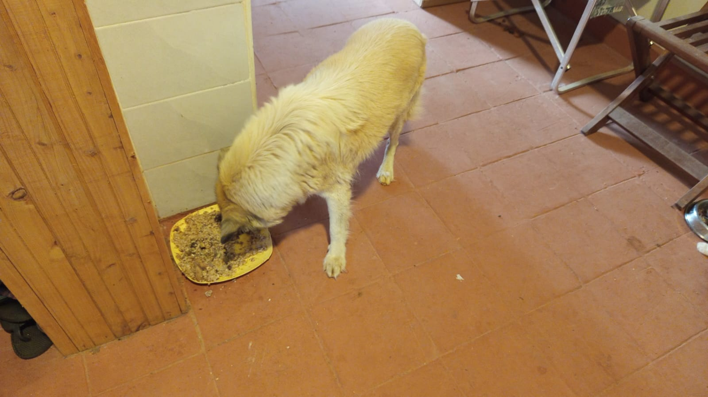

Mucheru World of Golf
Field operations at Mucheru World of Golf on Wednesday, 21st October 2026 accomplished major technical, agronomic, and hydraulic milestones under the supervision of Mr. Gichuhi and Ken:
Golf Course Operational Highlights
One tipper lorry of clean river sand was delivered and spread across the foundation stone bed of Green 13. Ground crews applied, shaped, and leveled red topsoil across Teeboxes 13, 15, and 17, and trenched through Teebox 6 to lay an HDPE pipe connecting to Green 7. Invert levels of orange PVC drainage pipes were calibrated using a water level hose to guarantee positive gravity flow. Women crew backfilled the cross-course irrigation trench. The Chaka Farms irrigation pump was tied into the golf course mainline. Dam 2 liner repairs were fully completed, Dam 3 held full water capacity, and 2 palm trees were translocated and planted.
- River Sand Delivery & Spreading on Green 13: A tipper lorry delivered clean river sand to the course. Ground crews shoveled, wheelbarrowed, and spread the river sand over the gravel stone foundation layer of Green 13, preparing the agronomic profile for final surface leveling.
- Red Soil Application & Leveling on Teeboxes 13, 15 & 17: Ground crews hauled and spread rich red soil across three championship launch platforms: commencing initial soil placement on Teebox 13, spreading mounded soil to full terrace width on Teebox 15, and leveling Teebox 17 to finished design grade.
- HDPE Irrigation Trenching Through Teebox 6: Laborers excavated an open trench directly across Teebox 6 platform to lay a black HDPE irrigation line routing water across the corridor to interconnect with the secondary piping system near Green 7.
- PVC Drainage Levelling & Gravity Flow Verification: On-site plumbers and technicians used a transparent vinyl water level hose and tape measures along the orange PVC drainage pipeline to check trench invert elevations, ensuring continuous positive slope for gravity runoff into the main collector.
- Cross-Course Pipeline Trench Backfilling: The women manual labor crew followed the secondary irrigation line installed across the fairway, shoveling and leveling excavated topsoil back into the trench to protect the pipe and restore the playing surface.
- Chaka Farms Irrigation Pump Network Interconnection: Specialized plumbing crews linked the high-capacity irrigation pump station at Chaka Farms to the golf course main distribution network, fitting HDPE and green PPR pipes, compression fittings, and red handle isolation gate valves.
- Dam 2 Liner Repair 100% Complete & Palm Tree Planting: Githinji's women crew completed sealing and tucking all polythene liner connections on Dam 2 basin. Meanwhile, 2 palm tree holes were dug and 2 mature palm trees hauled from Chaka Farms were planted along the boundary. Dam 3 remained at full water level.
18-hole putting green status audit showing the latest work completed and current condition for each green as of October 21, 2026:
| Green | Current Technical & Agronomic State | Milestone Status |
|---|---|---|
| Green 1 | HDPE irrigation pipes laid and fitted inside perimeter sprinkler trenches (Oct 18). | Sprinkler Pipes Laid |
| Green 2 | HDPE irrigation pipes laid and fitted inside perimeter sprinkler trenches (Oct 18). | Sprinkler Pipes Laid |
| Green 3 | HDPE irrigation pipes laid and fitted inside perimeter sprinkler trenches (Oct 18). | Sprinkler Pipes Laid |
| Green 4 | Pop-up sprinkler and irrigation perimeter trenches dug along marked chalk line (Oct 14). | Sprinkler Trenches Complete |
| Green 5 | Ready. Fully established mature championship putting green turfgrass under active pop-up sprinkler irrigation conditioning. | Ready • Established Turf |
| Green 6 | Pop-up sprinkler trenches digging completed around green perimeter collar (Oct 15). | Sprinkler Trenches Complete |
| Green 7 | Drainage outlet trench connecting green 7 to main canal dug and leveled by manual crew (Oct 15). | Outlet Trench Dug • Leveled |
| Green 8 | Pop-up sprinkler trenches digging completed around green perimeter (Oct 15). | Sprinkler Trenches Complete |
| Green 9 | Orange drainage PVC pipe connected and outlet trench leveled leading to main canal (Oct 15). | PVC Connected • Trench Done |
| Green 10 | Pop-up sprinkler trenches digging completed around collar and surrounds (Oct 15). | Sprinkler Trenches Complete |
| Green 11 | Pop-up sprinkler trenches digging completed around green perimeter (Oct 15). | Sprinkler Trenches Complete |
| Green 12 | Pop-up sprinkler trenches digging completed around perimeter collar (Oct 15). | Sprinkler Trenches Complete |
| Green 13 Today | Clean riversand delivered, applied, and spread across foundation stone layer (Oct 21). | Riversand Applied |
| Green 14 | Riversand application and surface leveling completed across the foundation (Oct 18). | Riversand Leveled |
| Green 15 | Pop-up sprinkler trenches digging completed around outer collar surrounds (Oct 15). | Sprinkler Trenches Complete |
| Green 16 | Pop-up sprinkler trenches digging completed around green perimeter collar (Oct 15). | Sprinkler Trenches Complete |
| Green 17 | Riversand application and surface leveling fully completed across foundation (Oct 19). | Riversand Leveled |
| Green 18 | Pop-up sprinkler trenches dug; riversand applied and leveled across green surface (Oct 14). | Riversand • Sprinkler Trench |
Comprehensive 18-hole championship teebox platform audit tracking earthwork leveling, structural embankments, and playing corridor alignments as of October 21, 2026:
| Teebox | Current Technical & Earthwork State | Platform Status |
|---|---|---|
| Tee 1 | Launch platform surface grading and leveling actively refined to design elevation per new instructions (Oct 20). | Refined & Graded |
| Tee 2 | Platform surface grading and earthwork leveling further refined per updated instructions (Oct 20). | Refined & Graded |
| Tee 3 | Playing launch platform contoured, leveled, and refined per new instructions given today (Oct 20). | Refined & Graded |
| Tee 4 | Championship launch platform surface graded, contoured, and refined per new instructions (Oct 20). | Refined & Graded |
| Tee 5 | Playing platform surface actively graded and refined with red soil per new instructions (Oct 20). | Grading & Refining |
| Tee 6 Today | Trench excavated through platform to lay HDPE irrigation pipe connecting to Green 7 system (Oct 21). | Irrigation Trench Dug |
| Tee 7 | Both platforms actively graded, contoured, and refined with red soil per new instructions (Oct 20). | Refined & Graded |
| Tee 8 | Championship launch platform surface grading and contour refinement actively continued (Oct 19). | Grading & Refining |
| Tee 9 | Playing launch platform grading and contour refinement continued per new instructions (Oct 20). | Refinement in Progress |
| Tee 10 | Playing launch platform surface further refined and graded as per updated instructions (Oct 20). | Platform Refined |
| Tee 11 | Playing launch platform grading and contour refinement completely finished (Oct 13). | Refinement Complete |
| Tee 12 | Both championship and forward platforms actively shaped, leveled, and refined to finished design elevation (Oct 8). | Shaped & Refined |
| Tee 13 Today | Initial layer of red soil hauled, applied, and spread across platform surface (Oct 21). | Red Soil Applied |
| Tee 14 | Launch platform earthworks completely finished, shaped, and refined to final playing contour (Oct 7). | Finished & Refined |
| Tee 15 Today | Red soil hauled, spread, and leveled across platform to finished design elevation (Oct 21). | Red Soil Leveled |
| Tee 16 | Surplus red soil moved onto platform; launch terrace completely reshaped and leveled (Oct 5). | Platform Reshaped |
| Tee 17 Today | Red soil applied, spread, and leveled across platform terrace adjacent to Green 17 (Oct 21). | Red Soil Leveled |
| Tee 18 | Championship launch platform surface grading, red soil leveling, and refinement underway (Oct 16). | Grading & Refining |
Operations Agronomy & Engineering Synthesis
Course Agronomy & Earthwork Milestones: Green 13 advanced with clean riversand delivery and spreading over its foundation layer; Teeboxes 13, 15, and 17 were layered and leveled with rich red topsoil; Teebox 6 was trenched to lay HDPE irrigation pipe routing to Green 7.
Hydraulic & Reservoir Infrastructure: Invert levels of orange PVC drainage pipes were verified with a water level tube for positive gravity flow; cross-course irrigation pipe trench was backfilled; Chaka Farms pump station was hooked into the golf mainline; Dam 2 liner repair reached 100% completion; Dam 3 maintained full water capacity; and 2 palm trees were translocated and planted.
Field video documentation capturing Wednesday, 21st October 2026 operations at Mucheru World of Golf: tipper delivery and manual spreading of clean river sand across Green 13 stone foundation, application and grading of red topsoil across Teeboxes 13, 15, and 17, excavation of an irrigation trench across Teebox 6 connecting to Green 7, measuring orange PVC pipe levels with water level hose for continuous gravity fall, backfilling the cross-course pipeline trench, Chaka Farms pump station pipe connection, and Dam 2 liner completion.
Sequential photographic field documentation capturing river sand deliveries, green foundation spreading, teebox red soil earthworks, irrigation trenching, gravity pipe levelling, backfilling, dam infrastructure, and landscaping at Mucheru World of Golf:

River Sand Material Delivery
Heavy commercial tipper lorry delivering a full load of clean river sand to site for putting green agronomic profile construction.

River Sand Spreading on Green 13
Ground crew utilizing shovels and wheelbarrows to transport and spread delivered river sand over the gravel stone foundation.

Green 13 Sand Placement Underway
Early phase of spreading river sand over the leveled foundation matrix inside the red soil collar perimeter on Green 13.

Aerial Drone View — Green 13
High-altitude drone perspective showing the circular putting green with river sand partially layered across the foundation bed.

Red Soil Application — Teebox 13
Manual crew wheelbarrowing and shoveling fresh red topsoil onto the elevated Teebox 13 platform along the perimeter fence.

Earthwork Layering — Teebox 15
Laborers moving red soil from a staged mound to build up and grade the playing surface platform on Teebox 15.

Teebox 15 Platform Surface
Ground perspective of the Teebox 15 launch terrace with red soil evenly distributed across the entire platform footprint.

Aerial Drone View — Teebox 15
Aerial overhead view showing the rectangular red soil playing platform of Teebox 15 aligned alongside the boundary corridor.

Teebox 17 Leveled Platform
Fresh red topsoil applied and leveled to finished grade across Teebox 17 playing platform situated adjacent to Green 17.

Aerial Drone View — Teebox 17
Drone capture showing workers spreading red soil on Teebox 17 platform, with the adjoining sand-leveled green visible nearby.

Pipe Trenching Through Teebox 6
Aerial view of trench excavated directly through Teebox 6 platform to lay the HDPE irrigation line connecting to Green 7 system.

Pipeline Trench Backfilling
Women manual labor crew using hoes and shovels to backfill topsoil over the black HDPE pipe installed across the fairway.

PVC Drainage Joint Assembly
Plumbers inside the trench joining orange drainage PVC pipes with solvent cement and elbow fittings for collector drainage.

Gravity Invert Level Calibration
Technician checking the vertical elevation of orange PVC pipe fittings with a tape measure and water level tube for positive slope.

PVC Pipe Alignment & String Line
Long connected run of orange drainage PVC pipe positioned alongside the trench with grade stakes and string line set up.

Grade Stake & Slope Calibration
Crew member fine-tuning trench reference pegs using a clear water level hose to guarantee uninterrupted gravity water flow.

Drainage Canal Bed Leveling
Aerial drone photograph of laborers working inside the winding drainage canal, trimming high spots to secure smooth gravity discharge.

Dam 2 Liner Seam Repair Operations
Githinji's women crew working across the polythene geomembrane liner in Dam 2 basin, cleaning and preparing seam joints.

Aerial Drone View — Dam 2 Basin
Drone capture of Dam 2 reservoir showing the complete black polythene liner laid across basin floor and surrounding central island.

Aerial Drone View — Dam 3 Reservoir
Aerial inspection confirming Dam 3 maintaining excellent water storage at full capacity without liner leakage or seepage.

Palm Tree Pit Excavation
Farm workers digging deep planting holes along the course boundary fence for the two palm trees hauled from Chaka Farms.

Irrigation Pump Pipe Manifold
Detailed view of manifold connecting Chaka Farms pump station to golf mainline, showing HDPE, green PPR pipes, and valves.

Cross-Site Irrigation Supply Trench
Excavated supply trench routing interconnected HDPE and PPR pipes from the Chaka Farms water intake directly to the golf course line.
Chaka Farms
Operations across Chaka Farms on Wednesday, 21st October 2026 maintained balanced production, animal wellness, and grounds maintenance across four coordinated supervisory sectors:
Farm Operational Highlights
Dairy production yielded 9.0 Litres gross harvest (5.5L morning + 3.5L evening), with 8.0 Litres dispatched for commercial sales (4.5L morning + 3.5L evening) and 1.0 Litre distributed for routine internal farm allocations (0.5L Gladys staff ration + 0.5L Maasai), achieving 100% accounting reconciliation strictly in Litres with zero discrepancy. Farm purchases included 70kg dairy feeds, 2.5L cattle spraying chemical, and 500g DCP salt. Ken supervised the manual excavation of 5 deep fruit tree planting holes. Willy conducted morning socialization with white shepherds Coby, Mali, and Logan, alongside kennel manners, paw command drills, and obedience routines. Margaret and Monica maintained compound cleanliness and tended island grass.
- 100% Reconciled Dairy Harvest (9.0 Litres): Kamandau recorded 9.0 Litres total gross milk yield across daily milking (5.5L morning + 3.5L evening). Commercial sales dispatched totaled 8.0 Litres (4.5L morning + 3.5L evening). Internal farm allocations accounted for 1.0 Litre (0.5L Gladys staff ration + 0.5L Maasai), achieving 100% accounting balance strictly in Litres with zero variance.
- Farm Feed & Animal Health Input Purchases: Farm operations procured key livestock inputs: 70 kg of dairy feeds, 2.5 Litres of cattle spraying chemical (acaricide), and 500 grams of DCP salt to maintain cattle nutritional and ectoparasite management routines.
- Fruit Tree Planting Pit Excavation (5 Holes): Under Ken's direction, farm workers excavated 5 large, deep planting holes in the orchard grounds in preparation for fruit tree planting (specific fruit varieties to be confirmed).
- Canine Socialization, Kennel Manners & Obedience Drills: Willy oversaw comprehensive canine routines: morning socialization on the open lawn with Coby, Mali, and Logan; kennel sanitation; structured paw command reinforcement; and patience and obedience conditioning.
- Palm Tree Haulage & Island Lawn Maintenance: Farm crew dug out and loaded 2 palm trees onto Mr. Gichuhi's pickup for haulage to the golf course. Concurrently, Margaret and Monica carried out compound weeding, sweeping, and grass maintenance across the farm island lawn.
Official quantitative dairy milking harvest and sales ledger for Wednesday, 21st October 2026, recording gross yields, commercial dispatches, and internal farm disbursements strictly in Litres:
| Category / Transaction | Morning Session | Evening Session | Daily Total |
|---|---|---|---|
| Gross Milk Harvested | 5.5 Litres | 3.5 Litres | 9.0 Litres |
| Commercial Milk Sales (Dispatched) | 4.5 Litres | 3.5 Litres | 8.0 Litres |
| Internal Farm Allocation — Gladys (Staff) | 0.5 Litres | — | 0.5 Litres |
| Internal Farm Allocation — Maasai | 0.5 Litres | — | 0.5 Litres |
| Internal Farm Allocation — Goat Kids (Weaned) | 0.0 Litres | 0.0 Litres | 0.0 Litres |
| Total Volume Accounted For | 5.5 Litres | 3.5 Litres | 9.0 Litres (100% Reconciled) |
| Item Description | Quantity / Unit | Department / Usage | Status |
|---|---|---|---|
| Dairy Feeds | 70 kg | Dairy Cow Nutrition | Received • In Use |
| Cattle Spraying Chemical (Acaricide) | 2.5 Litres | Livestock Tick & Parasite Control | Received • In Stock |
| DCP Salt (Di-calcium Phosphate) | 500 g | Mineral Supplementation | Received • In Use |
Dairy Accounting & Farm Reconciliation Note
Total gross milk harvested of 9.0 Litres is 100% accounted for by 8.0 Litres sold commercially (4.5L morning + 3.5L evening) and 1.0 Litre in routine farm allocations (0.5L Gladys + 0.5L Maasai). In accordance with reporting rules, milk volumes are recorded strictly in Litres, and Maasai is designated strictly as Maasai with zero discrepancy. All livestock purchases are logged and verified on site.
Daily conditioning routines, behavioral discipline, fruit tree pit excavation, and island grounds maintenance conducted on Wednesday, 21st October 2026:
- Morning Pack Socialization on Open Lawn: Willy conducted structured morning socialization drills with white shepherds Coby, Mali, and Logan on the open green lawn, fostering calm pack manners and focus.
- Kennel Manners & Sanitation Routine: Daily kennel cleaning was observed alongside structured kennel manners training, conditioning the dogs to remain calm, orderly, and patient during stall entry and exit.
- Paw Command Drills & Obedience Conditioning: Handlers practiced the paw ("pow") command alongside stay-and-release obedience drills, reinforcing responsive handler engagement and discipline.
- Patience and Obedience Video Documentation: Recorded long-line stay exercises verifying the dogs' patience and steadfast adherence to release commands under distracting outdoor environments.
- Fruit Tree Pit Preparation: Ken directed the manual excavation of 5 deep planting holes across the farm grounds in anticipation of fruit tree saplings arriving for installation.
- Island Lawn Weeding & Compound Cleanliness: Margaret and Monica carried out grounds maintenance, hand-weeding and trimming the lush turfgrass on the farm island while keeping pathways swept and clean.
Field video documentation capturing Wednesday, 21st October 2026 canine unit routines under Willy: kennel sanitation, paw command practice, and structured kennel manners conditioning demonstrating calm, patient entry and exit discipline.
Field video documentation capturing Wednesday, 21st October 2026 canine training under Willy: patience, stay commands, and reliable obedience response drills conducted with the white shepherds on the farm grounds.
Photographic field documentation capturing canine pack socialization, fruit tree planting pit excavation, and island grounds maintenance across Chaka Farms:

Pack Socialization on Lawn
White shepherds Coby, Mali, and Logan resting attentively side-by-side during morning socialization and obedience training.

Canine Unit Discipline & Manners
Coby, Mali, and Logan displaying calm demeanor and pack focus under handler direction on the lush farm grounds.

Fruit Tree Planting Holes
Farm workers standing alongside deep excavated planting pits prepared across the orchard for upcoming fruit tree planting.

Excavated Planting Pit Detail
Close-up view of deep planting pit showing excavated topsoil loosened and ready for organic matter blending and sapling planting.

Island Lawn Grass Maintenance
Margaret and Monica manually weeding, trimming, and caring for the lush green grass on the Chaka Farms pond island.
Kabete Residence
Operations at Kabete Residence on Wednesday, 21st October 2026 advanced structural steelwork, electrical clearance, hillside drainage excavation, and domestic animal care, overseen and shared by Njoki:
Residence Operational Highlights
Construction workers fabricated, bent, and welded steel rebar beam cages for the SQ fireplace formwork, utilizing angle grinders and rebar tying wire. The assembled beam reinforcement cages were placed and wired onto the timber shutter bed. Electric cables running along the ground were elevated and secured against the foundation wall to clear space for the shutter formwork base. Laborers continued manual excavation of the steep hillside drainage trench behind the SQ wall. Domestic pets received attentive daily care: Ajabu the Golden Retriever enjoyed leashed walks and indoor meals, while resident cats Mocha, Reo, and Aiko were reunited and fed together.
- SQ Fireplace Steel Rebar Beam Fabrication: Metalworkers measured, cut with angle grinders, and bent heavy steel rebar bars, assembling rigid rectangular beam reinforcement cages with wire stirrups for the SQ outdoor fireplace structure.
- Shutter Formwork Beam Rebar Placement: The prefabricated steel rebar beam cages were lifted into place and secured onto the geometric timber shutter formwork floor, establishing the structural core for the fireplace base slab.
- Electrical Cable Elevation for Formwork Clearance: Workers lifted and rerouted buried black electrical conduits along the stone foundation wall base, securing them safely above ground level to pave the way for shutter formwork casting.
- Hillside Drainage Trench Excavation Behind SQ: Laborers equipped with gumboots and shovels continued manual digging of the deep hillside drainage trench behind the SQ building to intercept slope runoff and prevent water intrusion.
- Domestic Pet Wellness & Feline Reunion: Domestic pets received routine care: Ajabu the Golden Retriever completed outdoor leashed walks and was fed indoors; resident cats—Mocha, Reo, and Aiko—were reunited after Mocha's return and fed together in stainless bowls.
Sequential photographic field documentation capturing hillside drainage excavation, electrical cable elevation, rebar beam bending and shutter placement, and domestic pet care at Kabete Residence:

SQ Hillside Drainage Excavation
Laborers digging the deep drainage trench into the steep red soil embankment behind the SQ building near the fireplace.

Electrical Conduit Elevation
Worker lifting and securing electric cables off the ground along the stone foundation wall to clear space for the shutter formwork base.

Rebar Beam Cage Fabrication
Metalworker bending and wiring steel reinforcement rebar stirrups and longitudinal bars for the SQ fireplace beam structure.

Rebar Cutting & Assembly
Cutting steel rebar with an angle grinder with sparks flying as the fabrication of beam cages proceeds alongside the timber formwork.

Beam Rebar Setup in Shutter
Fabricated steel beam cages set up and wired along the perimeter of the timber shutter formwork bed at the SQ fireplace area.

Resident Cats Feline Reunion
All three resident cats—Mocha, Reo, and Aiko—peacefully eating together from stainless steel bowls after Mocha's safe return.

Domestic Pet Care — Ajabu Feeding
Ajabu the Golden Retriever enjoying his nutritious meal indoors on the tiled floor at Kabete Residence.
.jpeg)
Ajabu Outdoor Leashed Walk
Ajabu exploring the compound grounds on a secure lead during daily outdoor exercise and walking routine.
_01.jpeg)
Driveway Exercise Routine
Ajabu walking along the paved driveway grounds under handler guidance during outdoor exercise.
_02.jpeg)
Garden Perimeter Walk
Ajabu investigating garden greenery and flower borders along the residence wall during outdoor exercise.